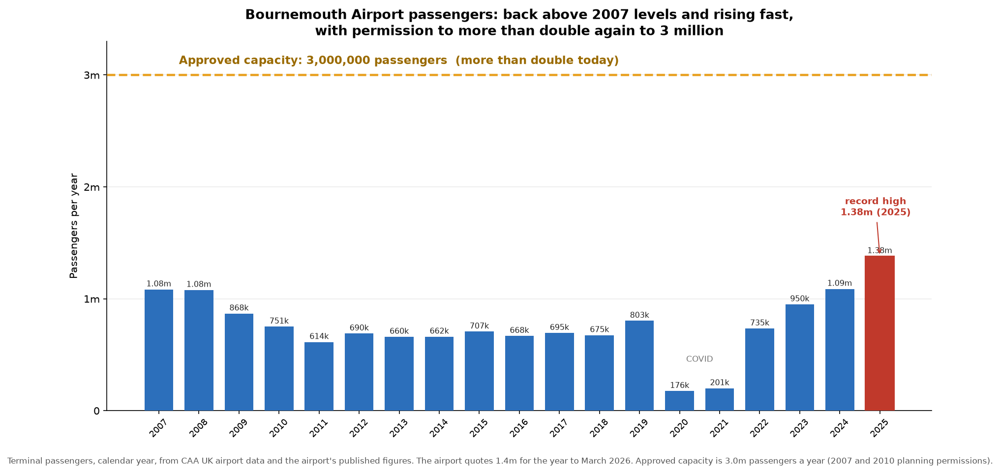
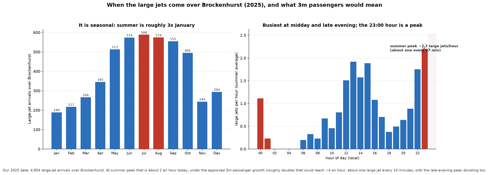
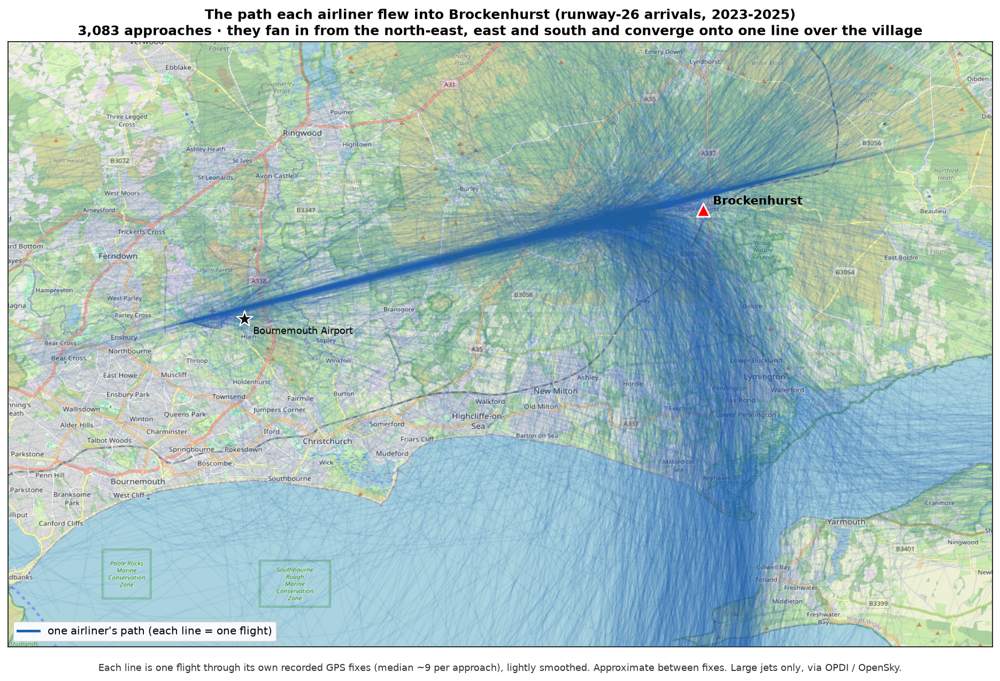
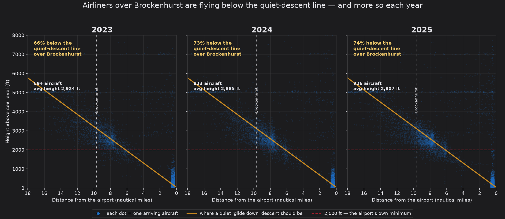
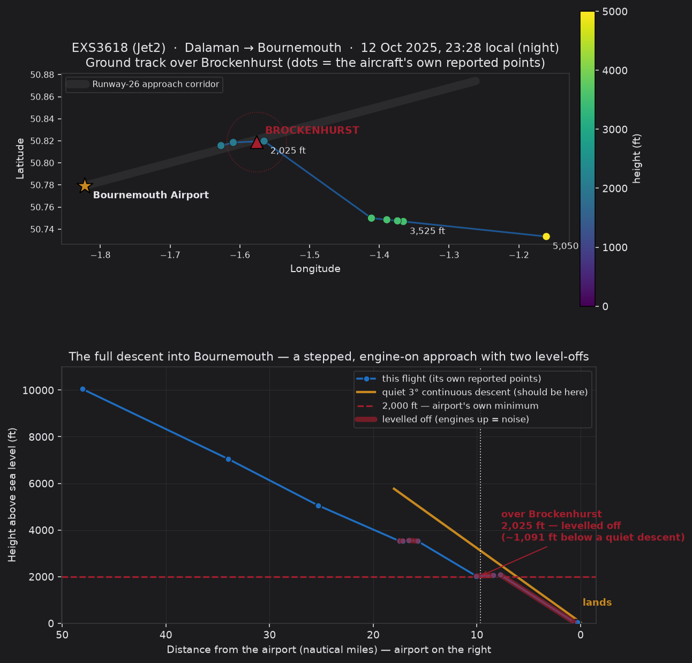
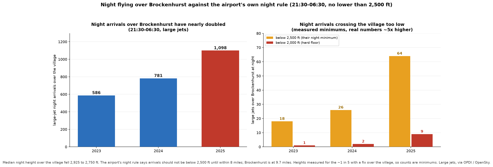
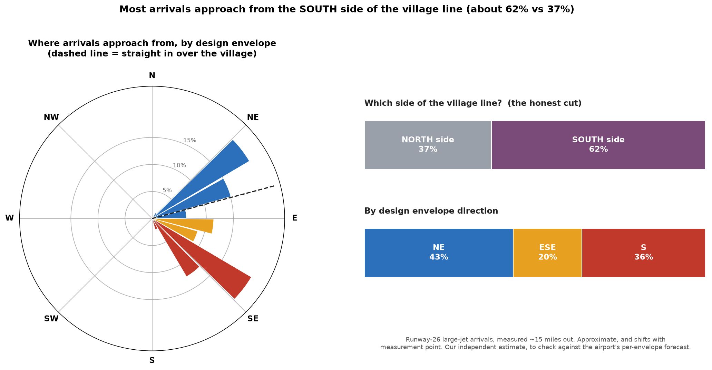
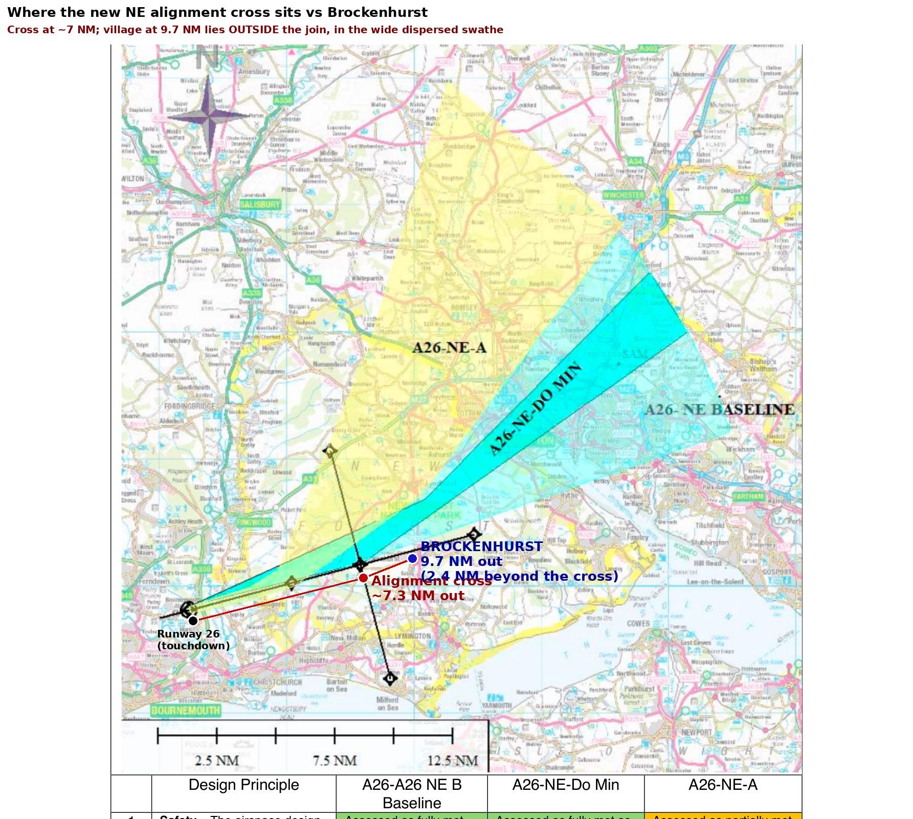

A recent spot survey drew over 255 responses in two days, and more than 75% of residents are concerned about the rising number of flights over Brockenhurst and the noise they bring.
Many residents can no longer fully enjoy their homes and gardens. Conversations are interrupted indoors and out as aircraft pass over, and families are regularly woken by late-night flights. The impact reaches beyond residents, to tourists and campers and the wider tranquillity of the New Forest National Park.
Brockenhurst sits just under 10 nautical miles out, directly in line with the main runway. It is made worse by aircraft arriving lower than the airport's own published rules, and often turning and levelling off right over the village, which needs extra engine power and extra noise. The numbers rise every year, and it is getting worse at night.
The most efficient landing is one smooth glide with the engines close to idle. It keeps the plane higher for longer, and quieter.
When a plane stops gliding, turns and flies level, it must add engine power and drag. That surge is the noise you hear overhead.
Brockenhurst is 9.7 nautical miles in a straight line off the runway, and over 75% of arrivals pass directly overhead.
Bournemouth Airport is redrawing its flight paths right now, through the formal CAA process (Airspace Change ACP-2019-43). The new satellite-guided routes are hyper precise: instead of today's scattered flights, aircraft will follow the exact same line. If that line is drawn over Brockenhurst as it is today, it becomes a permanent, concentrated noise highway. That is the threat, and it is also the opportunity to move it.
The law is on our side. The airport has a Section 106 planning commitment to continuous descent approaches, and a duty under the Levelling Up and Regeneration Act 2023 to further the National Park's purposes, the Sandford Principle, which puts conservation first.
Hold every arrival to a smooth, engine-idle glide, no early descents and no levelling off over the village. It is already in the airport's own rulebook.
Fly the standard 3-degree descent, or steeper, so aircraft are meaningfully higher and quieter as they cross the village.
As the satellite routes are drawn, place the line to avoid Brockenhurst, without shifting the burden onto other communities.
In the past, Brockenhurst residents did not take part in the consultation, and the flights came our way. This time can be different.
Read this pack, then tell your neighbours what is happening and why the coming consultation matters.
Get on the Aircraft Noise WhatsApp group. Email aircraft@
Every complaint is logged. Use the one-tap complaint card at the back of this pack.
Bournemouth carried about 1.08 million passengers in 2007-08. It fell back through the 2010s, crashed in COVID, and has recovered fast to a record 1.38 million in 2025, up 27% in a year. The airport holds permission to more than double again, to 3 million, aiming for 2043, so further steady growth should be expected.

Our own flight data shows the same climb. Between 2023 and 2025, arrivals into Bournemouth rose 28% (9,819 to 12,574), and large-jet arrivals rose 65% (2,943 to 4,854), more than twice as fast as flights overall.
The flights are not spread evenly. Summer has roughly three times the traffic of January, and the day has two peaks: around midday and in the late evening, with the 11pm hour the busiest of all and traffic continuing after midnight.

At the summer peak (the 11pm hour) about 2 large jets an hour arrive, the great majority routing over the village. This is a summer average, and on busy evenings it already bunches to one every 12 to 15 minutes. Under the approved growth it could roughly double.
When the wind is from the south-west, which is most of the time, planes land towards the west and approach over the New Forest, currently straight over Brockenhurst. The map plots where arriving airliners actually flew across three years.

About 76% of arrivals come in over Brockenhurst. The rest land the other way, from the coast side, and miss the village entirely.
The gold line below is where a plane should be on the quiet 3-degree glide, roughly 3,100 ft as it passes Brockenhurst. Each dot is one aircraft. Most sit below the line: lower than a quiet descent, which means louder.

The share of flights below the quiet-descent height rose from 70% (2023) to 74% (2024) to 81% (2025). The average height is falling, from about 2,775 ft to 2,700 ft, and there are more flights each year.
The recommended continuous descent is frequently not followed. Many arrivals stop their descent, turn, and fly level right over Brockenhurst, using extra engine power and making extra noise. Here is one real, recent example, built entirely from the aircraft's own recorded positions.

A Jet2 flight flew level at about 2,050 ft over Brockenhurst at 23:28, roughly 1,000 ft below a quiet descent. A stepped approach, not a gentle glide, and very noisy at night. This is not uncommon.
Night is when it hurts most: windows open in summer, everyone asleep. Night-time flights over Brockenhurst have more than doubled in three years, and more of them drop below the airport's own minimum height.

Between 21:30 and 06:30 the airport's own rule is to join final no closer than 8 nautical miles and no lower than 2,500 ft. Over Brockenhurst, the data shows this is often not happening.
Arrivals from the north, the east and many from the south are converged onto Brockenhurst by air traffic control. Rather than routing to reduce noise over the National Park, ATC defaults to tactical vectoring, and flights frequently bank close to the village to take a shortcut to the runway.
| What banking does | Ground-noise impact |
|---|---|
| Noise is aimed sideways | A banked aircraft exposes one side of the ground more directly to engine and airframe noise, so people off the centreline hear a louder event than expected. |
| Thrust increases | Holding altitude through a turn needs more lift and more power, which means more engine noise. |
| Paths concentrate | If many aircraft turn at the same point, the noise repeats over the same neighbourhoods instead of spreading out. |
A banking turn keeps the aircraft audible for longer, shifts the loudest point sideways, and its changing engine tone makes each event more noticeable. Repeated turns over one area build a strong annoyance effect even when each single event is within limits. This is exactly what the west of Brockenhurst experiences: straight overflights from the east, plus banking flights from the north and south, over an area with very little background noise.
We are not inventing a standard. Bournemouth's published rules (UK AIP, EGHH AD 2.21) say arrivals should fly a continuous descent at all times, stay as high as practical, and join the approach without level flight.
Their own Noise Action Plan (2024) mandates that all aircraft be operated to minimise disturbance, and confirms that when aircraft are forced into level flight they use greater engine power and do not achieve a continuous descent.
| Rule | What it requires |
|---|---|
| AIP AD 2.21 | Continuous descent, as high as practical, join the approach without level flight. |
| Night rule | Between 21:30 and 06:30, join final no closer than 8 NM and no lower than 2,500 ft. |
| Section 106 | A binding planning obligation to operate so as to cause the least disturbance practicable to residents. |
| Levelling Up Act 2023 | With the Sandford Principle, a duty to put conservation first and further the National Park's aims. |
The airport argues these duties apply only to self-positioning aircraft, not the radar-vectored traffic that ATC shortcuts across the National Park. That exempts the majority of arrivals from the very rules meant to protect us.
The live consultation is the moment. As the new satellite-guided routes are drawn, a few clear rules could deliver a win for the airport, wildlife, tourists and residents alike. For people on the ground, the biggest drivers of noise are altitude, engine thrust, how close the path is, and how often it repeats.
The airport claims its noise duties apply only to self-positioning aircraft, not the radar-vectored majority. We accept genuine exceptions for safety or severe weather, but an exception rate above 70% is the rule, not the exception. We ask that the following are considered.
Our three proposalsAlready in the airport's rulebook. It keeps aircraft higher, avoids level flight and thrust, and burns less fuel. It should be mandated for all flights bar genuine exceptions.
The standard is 3 degrees (about 3,100 ft here). Applying it would put 77% of flights higher. Going to 3.3 or 3.5 degrees would help more still.
Use the precision of the new routes to place the line away from Brockenhurst, without shifting the burden onto other communities.
The consultation is at Stage 2 (Develop and Assess). The airport's latest proposals appear paused by the CAA pending fuller information. A 12-week public consultation will follow, which is our window to be heard.
To choose the best solution we need to know where arrivals come from. Our historic data gives a strong steer, pending the airport's own per-envelope volumes.

Over 60% of arrivals come in from the south side of the village line. A rough three-way split is about 40% north-east, 40% south and 20% east-south-east, but treat those as approximate: they shift with where you measure, and the south share is understated, because southern flights blur into the other buckets as they turn onto final.
The airport is focused on three arrival directions, or design envelopes: North-East, East-South-East and South. On the North-East map below, the point where arrivals line up on final, the alignment cross, has moved inward to about 7 nautical miles from the runway.

| Option | Effect on Brockenhurst |
|---|---|
| A26-NE-Do Min | Benefit: routes traffic north of the village and does not bank until about 7 NM. Still tight to the north, so keeping flights to the centre or north of the corridor would help more. |
| A26-ESE-Do Min / B | Do Min gives limited benefit; B is better for us but likely impacts other, more populated communities. |
| A26-S-Do Min | Significant benefit, and avoids Brockenhurst. |
If the alignment point moving inward also lowers the joining height, the compliant height over the village could drop by up to about 860 ft. We need the airport's vertical profile to confirm this before it is locked in.
The precision of satellite routes risks a permanent noise corridor if every flight follows one line. Where routes pass close to homes, they should be varied periodically so no single area carries all the impact.
Britain's largest airports run strict night limits. Heathrow, Gatwick and Stansted have a government night quota for 23:30 to 06:00: a cap on movements, a noise budget, and a ban on the noisiest aircraft. Bournemouth is smaller and outside that scheme, but it could adopt similar measures itself, as many regional airports do through their planning agreements.
| Southampton Airport today | How night is managed |
|---|---|
| Night window | 23:00 to 06:00 (Mon to Sat), to 07:30 on Sunday. The terminal generally closes at 23:00. |
| Movement cap | A strict limit of 10 night movements per month, up to 100 a year, for medical flights and genuine disruption only. |
| Mechanism | Managed by limiting scheduled night flights, understood to have been set via a Section 106 agreement at residents' request. |
Bournemouth Airport to publish its continuous-descent rules and its own compliance over Brockenhurst, and to review the night quota, curfew and exceptions with the local planning authority.
Bournemouth submitted these design envelopes to the CAA. They were rejected and are being revisited, so they may change, but the airport's own assessment is a useful insight. Summarised below are the design principles that matter most to residents. On the airport's own scoring, not one option reduces noise or overflight for existing communities.
| Direction | Option | The airport's own verdict on overflight, noise and tranquillity |
|---|---|---|
| North-East | Do Min | Partially met Same number of people overflown as today. |
| A26-NE-A | Partially met Same number overflown, but different communities affected. | |
| East-South-East | Do Min | Partially met Same number of people overflown as today. |
| A26-ESE-B | Not met More people overflown, of much greater population density. | |
| South | Do Min | Partially met Same number of people overflown as today. |
| A26-S-A | Not met Significantly more communities overflown due to the wrap-around. |
The Noise Footprint principle asks the design to reduce noise where practicable. Every option is scored only "partially met", because it keeps the same overflight as today. The redesign is an opportunity to do better for the National Park, not just hold the line.
Summarised from the airport's own design-principle assessment. The full principle-by-principle tables are available on request.
Independent data. Every height, route and count comes from the aircraft's own broadcast GPS (ADS-B), via two public datasets (OPDI and OpenSky). It relies on nothing the airport tells us, and every chart can be reproduced.
Solid where it matters. Detailed height and route evidence covers three full years, 2023 to 2025. Passenger history (2007 to 2025) is from CAA statistics, cross-checked against two further sources. The 3 million cap is from the airport's 2007 and 2010 planning permissions.
We can pin an exact height over the village for about 1 in 5 arrivals (it depends on when each aircraft happened to broadcast a position). So our counts are minimums: the real numbers are higher, not lower.
What we deliberately do not claim. We do not say every low flight breaks a rule. We do not rely on European Cargo (now in administration). We do not use pre-2022 flight-track data, because reliable low-level tracking did not exist then. If a number cannot be verified, it is not in here.
| Source | Used for |
|---|---|
| UK CAA airport statistics | Passenger numbers and the growth trajectory. |
| Planning permissions (2007, 2010) | The 3 million passenger cap. |
| OPDI (EUROCONTROL) and OpenSky | Aircraft GPS tracks and heights, 2023 to 2025. |
Full method and definitions available on request.
Every complaint is logged and counts in the record. The whole thing takes about a minute from your phone. Scan, check, send.
Scan to open the airport's live map. Find the aircraft that disturbed you and note its flight number and time.
Scan to open a ready-written email to the airport. Add the flight number and time, then hit send.
Why it matters: the airport and the CAA weigh the volume and consistency of complaints. A steady, evidenced record from Brockenhurst is one of the strongest things we can build ahead of the consultation. If in doubt, complain.